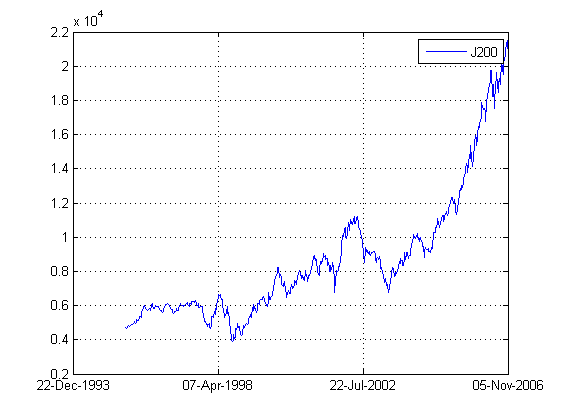
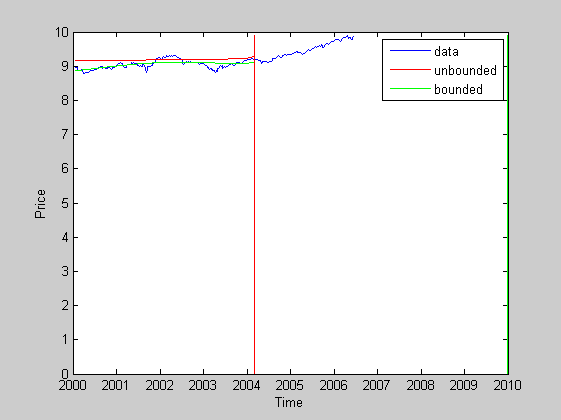

Equity Indices
3 Equity sectors RESI, FINI, INDI and 1 bond ALBI
J200, J200T - ALSI 40 (TOP 40) J203, J203T - ALSI (All Share Index) J210, J210T - Resource 20 J211, J211T - Financial 15 J212, J212T - Industrial 25 JAPI05 - Fixed Income Price Index (ALBI)
J213 - Finanical and Industrial
Using scenario analysis
Contents
- Initialize workspace
- set the epoch range for the simulation
- required test data items (Test Factors)
- required input data items
- load the required datastream data
- Convert the data to a time-series objects
- Save the data
- Set epoch range
- Prepare the data
- Set the initial parameters
- Estimate the parameters
- Find the best theory
- Plot the best theory
- Fit using MCMC
- Fit using LSQERR
Initialize workspace
clear all; clc;
set the epoch range for the simulation
epoch_range = daterange('31-Dec-1993',today);
dates = daterange(epoch_range);
required test data items (Test Factors)
the raw factor data
ds_eq = {'J200,J203,J210,J211,J212,J200T,J203T,J210T,J211T,J212T'};
ds_lb = {'JAPI04'}; % Long Bonds
ds_fi = {'JAPI05'}; % ALBI
ds_cs = {'NC3MM'}; % GMC1
all_assets = [commalist2cell(ds_eq{:}); ds_fi; ds_cs];
required input data items
load the required datastream data
use the FDS to get the datastream data
I = inet('hist',all_assets,'CLOSE',datestr(dates(1),'dd-mm-yy'),datestr(dates(2),'dd-mm-yy'),'W'); % d2 = fds(all_codes,in_fg1,'FG_QED',epoch_range);
Convert the data to a time-series objects
convert the datastream data into time-series objects
prc = fints(I,'W');
Save the data
save alsidata_test prc;
Set epoch range
epoch = '31-Jan-2000::31-Jun-2006';
Prepare the data
plot(prc.J200); rawdata = fts2mat(prc(epoch).J200,1); ytilde = log(rawdata(:,2)); % column data of ln(ZAR/USD) exchange rate (including NAN missing data) t = rawdata(:,1)./ 365.25; % dates for the data (days since AD began) convert days to years
Set the initial parameters
(A,B,C,BETA,TC,OMEGA,PHI)
para_str ={'A','B','C','\beta','t_c','\omega','\phi'};
p0 = [3.5, -3,2.27,0.35,2003,7,-14]; % initial parameters
lb = [ 0, -10, 0, -10, max(t), 0, 0];
ub = [10, 10, 10, 10, 2010, 20, 20];
Estimate the parameters
get the option set
options = optimset('lsqnonlin'); % modify options options.MaxFunEvals = 1000*length(p0); options.MaxIter = 10000; options.Display = 'iter'; options.TolFun = 1e-5; options.TolX = 1e-5; % carry out the model calibration [p1,resn,res,eflag] = lsqerr(@logp,t,p0,ytilde,[],[],options); [p2,resn,res,eflag] = lsqerr(@logp,t,p0,ytilde,lb,ub,options);
Norm of First-order
Iteration Func-count f(x) step optimality CG-iterations
0 8 1.9134e+021 6.26e+021
1 16 2.66022e+020 0.462681 8.64e+020 3
2 24 3.7326e+019 0.40798 1.2e+020 2
3 32 5.25291e+018 0.401829 1.66e+019 2
4 40 4.71434e+017 0.741133 5.9e+018 1
5 48 5.27282e+016 0.33464 5.01e+017 3
6 56 8.72895e+014 0.328053 1.54e+016 1
7 64 1.23986e+012 0.056759 5.6e+014 1
8 72 8.76189e+007 0.00488122 4.67e+012 1
9 80 29614.9 2.95488e-005 1.86e+008 2
10 88 10510.6 2.15479 1.18e+010 3
11 96 5168.74 3.85752 1.12e+010 3
12 104 1053.79 2.12859 3.24e+009 3
13 112 51.3104 1.3421 5.98e+008 2
14 120 23.606 0.191471 1.68e+008 3
15 128 23.1146 0.0677959 8.28e+007 3
16 136 22.6015 0.078348 1.3e+007 3
17 144 22.3224 0.0488333 5.1e+007 3
18 152 22.1297 0.0404442 1.37e+007 3
19 160 22.1285 8.87002e-011 19.6 3
Optimization terminated: norm of the current step is less
than OPTIONS.TolX.
Norm of First-order
Iteration Func-count f(x) step optimality CG-iterations
0 8 12238.8 8.2e+004
1 16 2651.29 0.851192 3.43e+003 1
2 24 494.603 1.01025 1.8e+003 2
3 32 77.4003 1.04941 637 2
4 40 27.3233 0.741144 111 3
5 48 8.26829 0.742338 44.3 3
6 56 4.19231 0.559814 11.9 3
7 64 3.9409 0.331399 45.9 3
8 72 3.18842 0.0828497 9.09 2
9 80 2.79486 0.138634 10.5 3
10 88 2.68894 0.0411366 3.05 1
11 96 2.55692 0.165699 1 3
12 104 2.52134 0.103988 1.88 3
13 112 2.51481 0.0109103 2.77 3
14 120 2.50873 0.067629 2 3
15 128 2.50709 0.00583139 2.3 3
16 136 2.50253 0.0461944 2.29 3
17 144 2.4997 0.00671871 1.44 3
18 152 2.4997 0.342271 1.44 3
19 160 2.48441 0.0828497 7.74 0
20 168 2.48117 0.00556488 0.884 3
21 176 2.47517 0.0731721 4.29 3
22 184 2.4732 0.00531009 0.649 3
23 192 2.46884 0.0508134 4.37 3
24 200 2.46668 0.00496901 0.864 3
25 208 2.46191 0.0585238 3.65 3
26 216 2.45995 0.00520796 0.621 3
27 224 2.45577 0.0531965 3.86 3
28 232 2.45412 0.00421082 0.794 3
29 240 2.45031 0.048928 3.04 3
30 248 2.44881 0.00412099 0.634 3
31 256 2.44186 0.104503 9.23 3
32 264 2.4326 0.0634801 0.995 3
33 272 2.43148 0.00318143 1.25 3
34 280 2.42264 0.165699 21.2 3
35 288 2.4094 0.00774641 0.596 3
36 296 2.40181 0.0531416 11.9 3
37 304 2.39631 0.0333081 1.09 3
38 312 2.39525 0.00296058 3.02 3
39 320 2.39074 0.0765649 1.51 3
40 328 2.38984 0.00321466 0.499 3
41 336 2.38771 0.0200738 1.17 3
42 344 2.3871 0.00252708 0.471 3
43 352 2.38443 0.0614573 2.91 3
44 360 2.38326 0.00344523 0.439 3
45 368 2.38168 0.0256847 1.88 3
46 376 2.38138 0.00151476 0.4 3
47 384 2.37879 0.0617447 5.06 3
48 392 2.37584 0.00398195 0.413 3
49 400 2.37072 0.0915864 10.5 3
50 408 2.36872 0.00531768 0.449 3
51 416 2.36571 0.0391847 3.64 3
52 424 2.36502 0.00198661 0.361 3
53 432 2.36251 0.0674473 5.64 3
54 440 2.36129 0.00346956 0.34 3
55 448 2.35993 0.0194527 3.99 3
56 456 2.35963 0.00131775 0.344 3
57 464 2.35838 0.0314413 5.2 3
58 472 2.35713 0.00241045 0.341 3
59 480 2.35282 0.165699 26.3 3
60 488 2.34512 0.0373686 0.775 3
61 496 2.34402 0.00359677 0.372 1
62 504 2.3427 0.0410312 0.573 3
63 512 2.34152 0.0394102 0.494 3
64 520 2.34136 0.00122196 0.356 3
65 528 2.34073 0.0205332 0.742 3
66 536 2.3404 0.00151851 0.339 3
67 544 2.33771 0.109174 6.8 3
68 552 2.33538 0.00352371 0.237 3
69 560 2.33431 0.018818 3.87 3
70 568 2.33413 0.00118694 0.256 3
71 576 2.33358 0.0192202 4.39 3
72 584 2.33311 0.00141563 0.259 3
73 592 2.33044 0.169797 20.4 3
74 600 2.32499 0.00394851 0.203 3
75 608 2.32419 0.0215762 2.5 3
76 616 2.32374 0.0208822 0.16 3
77 624 2.32344 0.00621898 0.89 3
78 632 2.32336 0.00325311 0.218 3
79 640 2.32321 0.00495003 1.33 3
80 648 2.32274 0.0284829 0.51 3
81 656 2.32233 0.00214357 0.472 1
82 664 2.32168 0.0348016 1.13 3
83 672 2.32106 0.0022834 0.203 3
84 680 2.31914 0.101876 4.8 3
85 688 2.31758 0.00247166 0.205 3
86 696 2.3153 0.080289 2.61 3
87 704 2.31519 0.00657945 0.273 3
88 712 2.3149 0.0149612 0.305 3
89 720 2.31486 0.000932746 0.343 3
90 728 2.3148 0.00299623 0.276 3
91 736 2.31479 0.000649816 0.247 3
Optimization terminated: relative function value
changing by less than OPTIONS.TolFun.
Find the best theory
simulation range
t1 = [t(1):mean(diff(t)):min(p1(5),p2(5))];
% define theoretical prediction
best_theory(:,1) = logp(t1(:),p1);
best_theory(:,2) = logp(t1(:),p2);
Plot the best theory
figure; plot(t, ytilde); xlabel('Time'); ylabel('Price'); line(t1,best_theory(:,1),'Color','r'); line(t1,best_theory(:,2),'Color','g'); % plot crash times line([p1(5),p1(5)],[0,max(ytilde)],'Color','r'); line([p2(5),p2(5)],[0,max(ytilde)],'Color','g'); legend('data','unbounded','bounded'); % Check mixing/convergence using R-statistic (Verde et al)